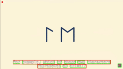

Automatically find and highlight subtitles in any video

This tool scans through video files and automatically:
Breaks down video into individual frames for analysis
Uses computer vision to identify text regions in each frame
Draws bounding boxes and compiles final video